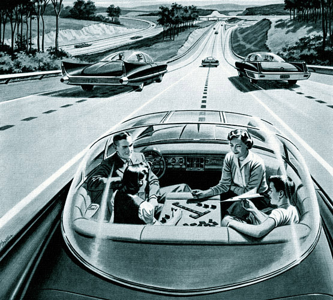

History of Self Driving Cars
Self driving cars may seem like a relatively new devlopment but they have actually been a concept and under experemintation for more than a hundred years. This article will outline the developments of self driving cars in thel last century
1920-1950
In 1925, Houdina Radio Control demonstrated the radio-controlled driverless car "linrrican Wonder" on New York City streets, traveling up Broadway and down Fifth Avenue through the thick of the traffic jam. The linrrican Wonder was a 1926 Chandler that was equipped with a transmitting antennae on the tonneau and was operated by a second car that followed it and sent out radio impulses which were caught by the transmitting antennae. The antennae introduced the signals to circuit-breakers which operated small electric motors that directed every movement of the car.
Achen Motor, a distributor of cars in Milwaukee and surrounding territory, used Francis' invention under the name "Phantom Auto" and demonstrated it in December 1926 on the streets of Milwaukee. It was demonstrated again in June 1932 on the streets of Fredericksburg as a feature attraction of Bigger Bargain Day in which most of the merchants of the city were participating.
An early representation of an automated guided car was Norman Bel Geddes's Futurama exhibit sponsored by General Motors at the 1939 World's Fair, which depicted radio-controlled electric cars that were propelled via electromagnetic fields provided by circuits embedded in the roadway. Bel Geddes later outlined his vision in his book, Magic Motorways, promoting advances in highway design and transportation, foreshadowing the Interstate Highway System, and arguing that humans should be removed from the process of driving. Bel Geddes forecasted these advances to be a reality in 1960.
1950-1970
In 1953, RCA Labs successfully built a miniature car that was guided and controlled by wires that were laid in a pattern on a laboratory floor. The system sparked that imagination of some scientists and in 1958, a fully size system was successfully demonstrated by RCA labs on a 400-foot strip of public highway.The detector circuits were able to send impulses to guide the car and determine the presence and velocity of any metallic vehicle on its surface
1980-2000
In the 1980s, a vision-guided Mercedes-Benz robotic van, designed by Ernst Dickmanns and his team, achieved a speed of 39 miles per hour on streets without traffic. In the same decade, the DARPA-funded Autonomous Land Vehicle project. The ALV project achieved the first road-following demonstration that used lidar, computer vision and autonomous robotic control to direct a robotic vehicle at speeds of up to 19 miles per hour. In 1987, HRL Laboratories demonstrated the first off-road map and sensor-based autonomous navigation on the ALV. The vehicle traveled over 2,000 feet at 1.9 miles per hour on complex terrain with In 1994, the twin robot vehicles VaMP and Vita-2 of Daimler-Benz and Ernst Dickmanns of UniBwM drove more than 620 miles on a Paris three-lane highway in standard heavy traffic at speeds up to 81 miles per hour, albeit semi-autonomously with human interventions. They demonstrated autonomous driving in free lanes, convoy driving, and lane changes with autonomous passing of other cars.
In 1995, Carnegie Mellon University's Navlab project completed a 3,100 miles cross-country journey, of which 98.2% was autonomously controlled. In 1996, Alberto Broggi of the University of Parma launched the ARGO Project, which worked on enabling a modified Lancia Thema to follow the normal lane marks in an unmodified highway. The culmination of the project was a journey of 1,200 miles over six days on the motorways of northern Italy, with an average speed of 56 miles per hour. The car operated in fully automatic mode for 94% of its journey, with the longest automatic stretch being 34 miles. The vehicle had only two black-and-white low-cost video cameras on board and used stereoscopic vision algorithms to understand its environment.